Project 5: Diffusion Models (Part A)
CS180 • Fall 2025
Overview: The Power of Diffusion
In this project, I explore Diffusion Models, the state-of-the-art approach for generative image tasks.
Unlike GANs, diffusion models work by iteratively removing noise from a signal to recover a clean image representing the data distribution.
Part A focuses on using a pre-trained model, DeepFloyd IF, to understand the sampling process. I start by generating images from text prompts and analyzing the effect of inference steps. Specifically, I selected prompts that will be reused later for Visual Anagrams and Hybrid Images.
Part A focuses on using a pre-trained model, DeepFloyd IF, to understand the sampling process. I start by generating images from text prompts and analyzing the effect of inference steps. Specifically, I selected prompts that will be reused later for Visual Anagrams and Hybrid Images.
Part 0 — Setup and Text-to-Image Generation
To begin, I set up the environment to use Stability AI's DeepFloyd IF-I-XL-v1.0.
I generated text embeddings for three specific prompts and tested the model's output quality by varying the number of inference steps.
Random Seed: 100
Prompt 1: "an oil painting of people around a campfire"
This prompt was chosen as the basis for the Visual Anagrams task later.
I compared 20 inference steps against 100 inference steps.

20 Inference Steps
The composition is visible, but the details are blurry. The faces are indistinct, and the fire lacks texture.
The composition is visible, but the details are blurry. The faces are indistinct, and the fire lacks texture.

100 Inference Steps
Much higher fidelity. The lighting from the fire is consistent, and the figures are clearly defined.
Much higher fidelity. The lighting from the fire is consistent, and the figures are clearly defined.
Prompt 2: "a lithograph of a skull"
This prompt is intended for Hybrid Images (mixing low-frequency skull shapes with high-frequency textures).
Lithographs rely on sharp lines, making them a good test for convergence.

20 Inference Steps
The skull shape is present, but the "lithograph" texture looks more like random noise than intentional hatching.
The skull shape is present, but the "lithograph" texture looks more like random noise than intentional hatching.

100 Inference Steps
Sharp, crisp lines. The shading uses distinct strokes characteristic of the lithograph style.
Sharp, crisp lines. The shading uses distinct strokes characteristic of the lithograph style.
Prompt 3: "a photo of a hipster barista"
A photorealistic prompt to test the model's ability to generate faces and complex clothing details, useful for Inpainting tests later.

20 Inference Steps
The face is somewhat distorted, and the background elements (coffee machine/shelves) are muddled.
The face is somewhat distorted, and the background elements (coffee machine/shelves) are muddled.

100 Inference Steps
Photorealistic quality. The facial features are symmetrical, the glasses are well-formed, and the apron texture is realistic.
Photorealistic quality. The facial features are symmetrical, the glasses are well-formed, and the apron texture is realistic.
Reflection on Inference Steps
The comparison between 20 and 100 steps highlights the iterative nature of diffusion.
At 20 steps, the model has successfully mapped the random noise to the general "manifold" of the prompt—colors and rough shapes are correct—but it hasn't had enough time to resolve high-frequency details.
At 100 steps, the model converges to a high-quality output. Textures (like the lithograph lines or oil paint strokes) become distinct rather than noisy blobs. This confirms that higher step counts are crucial for style transfer and fine details.
At 20 steps, the model has successfully mapped the random noise to the general "manifold" of the prompt—colors and rough shapes are correct—but it hasn't had enough time to resolve high-frequency details.
At 100 steps, the model converges to a high-quality output. Textures (like the lithograph lines or oil paint strokes) become distinct rather than noisy blobs. This confirms that higher step counts are crucial for style transfer and fine details.
Part 1 — Sampling Loops
In the first part of the project, I moved from using the pre-trained model as a "black box" to implementing the diffusion process myself.
The goal was to understand how noise is added to an image (forward process) and how the model reverses this to generate clean images (reverse process).
1.1 Implementing the Forward Process
The Forward Process describes the physical diffusion part of the model: taking a clean image and progressively destroying its structure by adding Gaussian noise.
This is deterministic and depends on the timestep t.
I implemented the function
I implemented the function
forward(im, t) which scales the image and adds noise according to the schedule $\bar\alpha_t$:
Function Forward(CleanImage, t):
1. Retrieve cumulative alpha value (alpha_bar) for timestep t
2. Generate random noise (epsilon)
3. Compute the noisy image:
NoisyImage = sqrt(alpha_bar) * CleanImage + sqrt(1 - alpha_bar) * Noise
Return: NoisyImage
Below, you can see the effect of this process on the Campanile test image at different timesteps.
At t=250, the image is just slightly grainy. By t=750, the original signal is almost entirely lost in noise.

Original (t=0)

t = 250

t = 500

t = 750
1.2 Classical Denoising
To establish a baseline, I attempted to remove the noise using classical Gaussian Blurring.
This method works by averaging neighboring pixels, which smooths out high-frequency noise but inevitably destroys high-frequency details (edges, textures).
I applied a Gaussian blur (e.g., kernel size 5, sigma 2.0) to the noisy images.
I applied a Gaussian blur (e.g., kernel size 5, sigma 2.0) to the noisy images.
denoised_im = TF.gaussian_blur(noisy_im, kernel_size=5, sigma=2.0)As seen below, this fails to recover the original content effectively. While the noise is reduced, the Campanile becomes a blurry blob. This highlights the difficulty of the task: we need a model that can hallucinate missing details, not just smooth them out.

Noisy (t=250)

Gaussian Denoising
Noise reduced, but details lost.
Noise reduced, but details lost.

Noisy (t=500)

Gaussian Denoising
The tower is barely recognizable.
The tower is barely recognizable.

Noisy (t=750)

Gaussian Denoising
Almost purely a gray blur.
Almost purely a gray blur.
1.3 One-Step Denoising
In this part, I used the pre-trained UNet to estimate the noise in the image and remove it in a single step.
The UNet was trained to predict the noise $\epsilon$ given a noisy image $x_t$ and the timestep $t$.
By rearranging the forward process equation, we can estimate the original image $x_0$ directly: $$ \hat{x}_0 = \frac{x_t - \sqrt{1 - \bar\alpha_t} \cdot \epsilon_\theta(x_t, t)}{\sqrt{\bar\alpha_t}} $$ Below, I show the results for three different noise levels. While the model does a decent job at projecting the noisy image back onto the "manifold of natural images", detail is lost at higher noise levels because the problem becomes increasingly ill-posed.
By rearranging the forward process equation, we can estimate the original image $x_0$ directly: $$ \hat{x}_0 = \frac{x_t - \sqrt{1 - \bar\alpha_t} \cdot \epsilon_\theta(x_t, t)}{\sqrt{\bar\alpha_t}} $$ Below, I show the results for three different noise levels. While the model does a decent job at projecting the noisy image back onto the "manifold of natural images", detail is lost at higher noise levels because the problem becomes increasingly ill-posed.
Noise Level t = 250
Original
Noisy (t=250)

One-Step Denoised
Very clear, almost perfect reconstruction.
Very clear, almost perfect reconstruction.
Noise Level t = 500
Original
Noisy (t=500)

One-Step Denoised
Blurrier, textures like the clock face are lost.
Blurrier, textures like the clock face are lost.
Noise Level t = 750
Original
Noisy (t=750)

One-Step Denoised
Significant loss of detail, hallucinates generic features.
Significant loss of detail, hallucinates generic features.
1.4 Implementing Iterative Denoising
The core idea of diffusion models is to denoise iteratively. Instead of jumping from pure noise to a clean image in one go (which is hard), we take small steps.
I implemented the `iterative_denoise` function which follows the strided timestep schedule. At each step $t$, the model predicts the noise, estimates a cleaner image $x_0$, and then moves to the next timestep $t'$ (where $t' < t$). To skip steps and speed up generation, I used a strided schedule (stride=30), moving from $t=990$ down to $0$.
Here is the core update step I implemented:
Here is my complete method
I implemented the `iterative_denoise` function which follows the strided timestep schedule. At each step $t$, the model predicts the noise, estimates a cleaner image $x_0$, and then moves to the next timestep $t'$ (where $t' < t$). To skip steps and speed up generation, I used a strided schedule (stride=30), moving from $t=990$ down to $0$.
Here is the core update step I implemented:
Function Sample_Previous_Step(NoisyImage, PredictedNoise, t):
1. Estimate the original clean image (x_0_est) by subtracting the
PredictedNoise from the NoisyImage (scaled by alpha values).
2. Calculate the posterior mean for the previous timestep (x_{t-1}):
Compute a weighted sum of:
a) The estimated clean image (x_0_est)
b) The current NoisyImage
3. Generate the image for timestep t-1:
Result = PosteriorMean + Variance (random noise)
Return: Result
Here is my complete method
Function Iterative_Denoise(NoisyImage, StartIndex, Prompts, Timesteps):
CurrentState = NoisyImage
For i from StartIndex down to 0:
1. Get current timestep t and previous timestep (t-1)
2. Calculate alpha and beta scheduling parameters for t
3. Predict noise and variance using the UNet model:
Output = UNet(CurrentState, t, Prompts)
NoiseEstimate, VarianceEstimate = Split(Output)
4. Estimate the original Clean Image (x_0) from CurrentState
5. Calculate the Posterior Mean for the previous step (x_{t-1}):
Combine x_0 and CurrentState weighted by alpha/beta terms
6. Sample the image for the previous step:
NextState = PosteriorMean + Variance (stochastic noise)
7. (Optional) Every 5 steps, display the intermediate image
CurrentState = NextState
Return: Final Denoised Image (Clean)
Below is the evolution of the Campanile image over the denoising process (starting from a noisy image at t=690). At timestep 690, the structural information was compromised enough that the model hallucinated a lighthouse instead of restoring the campanile.
Denoising Process (Every 5th Iteration) starting with i_start = 10

Step 0 (t=690)
Start
Start

Step 5 (t=540)

Step 10 (t=390)

Step 15 (t=240)

Step 20 (t=90)
Near End
Near End
Method Comparison
Here I compare the results of different denoising strategies on the same noisy input.
Iterative Denoising clearly produces the sharpest and most faithful reconstruction of the Campanile, far superior to Gaussian blur or single-step prediction.

Noisy Input
(t=690)
(t=690)

Gaussian Blur
Very blurry
Very blurry

One-Step
Better, but lacks detail
Better, but lacks detail

Iterative (Ours)
Sharpest result
Sharpest result
1.5 Diffusion Model Sampling
Now that I have a working iterative denoising loop, I can use it to generate completely new images!
Instead of starting with a noisy Campanile, I start with pure Gaussian noise ($x_T \sim \mathcal{N}(0, \mathbf{I})$) and denoise it using the prompt
Since the initial noise is random, every run produces a different image. This is the core of generative AI.
Below are 5 samples generated from scratch. Without advanced guidance (which comes in the next section), the results are somewhat dream-like and abstract but show coherent textures.
"a high quality photo".
Since the initial noise is random, every run produces a different image. This is the core of generative AI.
Below are 5 samples generated from scratch. Without advanced guidance (which comes in the next section), the results are somewhat dream-like and abstract but show coherent textures.

Sample 1

Sample 2

Sample 3

Sample 4

Sample 5
1.6 Classifier-Free Guidance (CFG)
The samples in the previous section were coherent but looked a bit "dreamy" and lacked sharp definition.
To fix this, I implemented Classifier-Free Guidance (CFG).
The idea is to compute two noise estimates at each step:
The idea is to compute two noise estimates at each step:
- $\epsilon_u$: Unconditional noise (prompt:
"") - $\epsilon_c$: Conditional noise (prompt:
"a high quality photo")
# Compute the CFG noise estimate
# Formula: noise = noise_uncond + scale * (noise_cond - noise_uncond)
noise_est = uncond_noise_est + scale * (noise_est - uncond_noise_est)
With a guidance scale of $\gamma = 7$, the results are dramatically better. The images below (generated from the same "a high quality photo" prompt) are much sharper, have higher contrast, and look like actual photographs compared to the results in Part 1.5.

Sample 1

Sample 2

Sample 3

Sample 4

Sample 5
1.7 Image-to-Image Translation (SDEdit)
In this part, I implemented the SDEdit algorithm. The idea is simple but powerful:
we take a real image, add noise to it up to a certain timestep $t$, and then let the diffusion model denoise it starting from that step.
This effectively "projects" the image back onto the manifold of natural images known to the model.
This effectively "projects" the image back onto the manifold of natural images known to the model.
- At high noise levels (e.g., start=1), the original content is mostly lost, and the model hallucinates a completely new image (often unrelated) that matches the remaining low-frequency structure.
- At low noise levels (e.g., start=20), the original structure is preserved, and the model simply enhances details or textures.
1. Campanile

Original

Start 1
(High Noise)
(High Noise)

Start 3

Start 5

Start 7

Start 10

Start 20
(Low Noise)
(Low Noise)
2. Custom Image 1 (Shego)

Original

Start 1

Start 3

Start 5

Start 7

Start 10

Start 20
3. Custom Image 2 (Minecraft landscape)

Original

Start 1

Start 3

Start 5

Start 7

Start 10

Start 20
1.7.1 Editing Web and Hand-Drawn Images
SDEdit works exceptionally well for projecting non-realistic images (like sketches or cartoons) onto the natural image manifold.
Here, I took:
At higher noise levels (low `i_start` like 1 or 3), the model takes significant liberties, often turning a simple sketch into a photorealistic object that only vaguely resembles the original shape. Sometimes it does not come close at all, which can be seen with my 2nd drawing. At lower noise levels (high `i_start` like 10 or 20), the original strokes are somehwat preserved but cleaned up / made more realisitic / made more abstract.
- A web image (a drawing/graphic).
- Two hand-drawn sketches that I created.
At higher noise levels (low `i_start` like 1 or 3), the model takes significant liberties, often turning a simple sketch into a photorealistic object that only vaguely resembles the original shape. Sometimes it does not come close at all, which can be seen with my 2nd drawing. At lower noise levels (high `i_start` like 10 or 20), the original strokes are somehwat preserved but cleaned up / made more realisitic / made more abstract.
1. Web Image

Original

Start 1

Start 3

Start 5

Start 7

Start 10

Start 20
2. Hand-Drawn Sketch 1

Original

Start 1

Start 3

Start 5

Start 7

Start 10

Start 20
3. Hand-Drawn Sketch 2

Original

Start 1

Start 3

Start 5

Start 7

Start 10

Start 20
1.7.2 Inpainting
Inpainting allows us to replace specific parts of an image with new content generated by the diffusion model, while keeping the rest of the image unchanged.
This is achieved by modifying the denoising loop:
$$ x_{t-1} = \text{mask} \cdot x_{t-1}^\text{known} + (1 - \text{mask}) \cdot x_{t-1}^\text{unknown} $$
At every step, we force the pixels outside the mask (the parts we want to keep) to match the noisy version of the original image, while letting the model freely denoise the pixels inside the mask.
Here is the core of my `inpaint` function:
Function Inpaint(OriginalImage, Mask, Prompts, Scale, Timesteps):
1. Initialize CurrentImage with pure random noise
2. For each timestep t from Start down to 0:
# Part A: Classifier-Free Guidance
a. Compute Conditional Estimate using Prompts
b. Compute Unconditional Estimate using empty prompts
c. Combine estimates:
GuidedNoise = UncondNoise + Scale * (CondNoise - UncondNoise)
# Part B: Standard Reverse Step
d. Compute the Denoised Image (x_prev) using GuidedNoise
(This follows the standard DDPM sampling update)
# Part C: Inpainting Constraint (The "Force" Step)
e. Generate a noisy version of the OriginalImage at timestep t
f. Combine the Generated Image and the Noisy Original:
CurrentImage = (Mask * DenoisedImage) + ((1 - Mask) * NoisyOriginal)
(This ensures pixels inside the mask are generated, while
pixels outside the mask match the original image)
3. Return CurrentImage
I applied this to the Campanile (replacing the top) and two custom images.
1. Campanile: Replaced the top
Original Image

Mask (White = Inpaint)

Result
("a high quality photo")
("a high quality photo")
2. Custom Image 1 (Shego)

Original Image

Mask

Result
3. Custom Image 2 (Minecraft landscape)

Original Image

Mask

Result
1.7.3 Text-Conditioned Image-to-Image Translation
In this variation of SDEdit, instead of projecting the image back to a generic "high quality photo", I guided the generation with a specific text prompt:
This forces the diffusion model to reinterpret the shapes and colors of the original image as elements of the Amalfi Coast (buildings on cliffs, sea, etc.).
"a photo of the amalfi cost".
This forces the diffusion model to reinterpret the shapes and colors of the original image as elements of the Amalfi Coast (buildings on cliffs, sea, etc.).
- High Noise (Start 1-5): The image is completely reimagined as a coastal scene, often ignoring the original content.
- Low Noise (Start 10-20): The original image structure is dominant, and the "Amalfi Coast" style is applied more subtly as a texture or lighting change.
1. Campanile -> Amalfi Coast
Original

Start 1

Start 3

Start 5

Start 7

Start 10

Start 20
2. Custom Image 1 (Shego) -> Amalfi Coast
Original

Start 1

Start 3

Start 5

Start 7

Start 10

Start 20
3. Custom Image 2 (Minecraft landscape) -> Amalfi Coast
Original

Start 1

Start 3

Start 5

Start 7

Start 10

Start 20
1.8 Visual Anagrams
Visual Anagrams are optical illusions where an image looks like one thing upright, but something completely different when rotated 180 degrees.
To achieve this, I modified the denoising loop to optimize for two prompts simultaneously:
- Estimate noise $\epsilon_1$ for Prompt 1 on the normal image.
- Flip the image upside down.
- Estimate noise $\epsilon_2$ for Prompt 2 on the flipped image.
- Flip $\epsilon_2$ back and average it with $\epsilon_1$.
Function Make_Flip_Illusion(StartImage, StartIndex, Prompt1, Prompt2, Scale):
CurrentState = StartImage
For i from StartIndex down to 0:
# 1. Estimate Noise for the UPRIGHT image using Prompt 1
Noise1 = Predict_Noise(CurrentState, t, Prompt1, GuidanceScale)
# 2. Create FLIPPED version of the current image
FlippedState = Flip_Image(CurrentState)
# 3. Estimate Noise for the FLIPPED image using Prompt 2
Noise2_Flipped = Predict_Noise(FlippedState, t, Prompt2, GuidanceScale)
# 4. Flip the noise estimate back to upright orientation
Noise2 = Flip_Image(Noise2_Flipped)
# 5. Average the two noise estimates
CombinedNoise = (Noise1 + Noise2) / 2
# 6. Perform the standard Denoising Step using CombinedNoise
CurrentState = Denoise_Step(CurrentState, CombinedNoise, t)
Return: CurrentState
Below are three examples of such illusions.
1. "An Oil Painting of an Old Man" <-> "People around a Campfire"

Upright: An Old Man

Flipped 180°: People around a Campfire
2. "A Rocket Ship" <-> "A Pencil"

Upright: A Rocket Ship

Flipped 180°: A Pencil
3. "Amalfi Coast" <-> "Snowy Mountain Village"

Upright: Amalfi Coast

Flipped 180°: Snowy Mountain Village
1.9 Hybrid Images (Factorized Diffusion)
Hybrid Images combine the low-frequency components of one image with the high-frequency components of another.
When viewed from afar (or squinting), you see the low-frequency structure. When viewed up close, you see the high-frequency details.
I implemented this using Factorized Diffusion. We generate noise estimates for two different prompts, then decompose them into frequency bands: $$ \epsilon = \underbrace{\mathcal{G}_{\sigma}(\epsilon_1)}_{\text{Low Freq}} + \underbrace{(\epsilon_2 - \mathcal{G}_{\sigma}(\epsilon_2))}_{\text{High Freq}} $$ where $\mathcal{G}_{\sigma}$ is a Gaussian blur operation.
I implemented this using Factorized Diffusion. We generate noise estimates for two different prompts, then decompose them into frequency bands: $$ \epsilon = \underbrace{\mathcal{G}_{\sigma}(\epsilon_1)}_{\text{Low Freq}} + \underbrace{(\epsilon_2 - \mathcal{G}_{\sigma}(\epsilon_2))}_{\text{High Freq}} $$ where $\mathcal{G}_{\sigma}$ is a Gaussian blur operation.
Function Make_Hybrid_Image(StartImage, StartIndex, PromptLowFreq, PromptHighFreq, Scale):
CurrentState = StartImage
For i from StartIndex down to 0:
# 1. Generate Noise Estimates for both prompts
# eps1 corresponds to the image seen from far away (Low Frequency)
# eps2 corresponds to the image seen from up close (High Frequency)
Noise1 = Predict_Noise(CurrentState, t, PromptLowFreq, Scale)
Noise2 = Predict_Noise(CurrentState, t, PromptHighFreq, Scale)
# 2. Frequency Decomposition
# Apply Low-Pass Filter (Gaussian Blur) to Noise1
LowFreq_Noise = Gaussian_Blur(Noise1, KernelSize=33, Sigma=2)
# Apply High-Pass Filter to Noise2 (Original - Blurred)
HighFreq_Noise = Noise2 - Gaussian_Blur(Noise2, KernelSize=33, Sigma=2)
# 3. Combine Frequencies
CombinedNoise = LowFreq_Noise + HighFreq_Noise
# 4. Standard Denoising Step
# Update the image using the hybrid noise estimate
CurrentState = Denoise_Step(CurrentState, CombinedNoise, t)
Return: CurrentState
Below are three examples. The "Pixelated" view simulates seeing the image from a distance (low pass), revealing the hidden shape.
1. "A Lithograph of a Mushroom" (Low) + "A Nuclear Explosion" (High)

Hybrid Image
(Up Close: Explosion)
(Up Close: Explosion)

Blurred View
(Reveals Mushroom Shape)
(Reveals Mushroom Shape)
Pixelated View
(Distance Simulation)
(Distance Simulation)
2. "A Photo of a Hamburger" (Low) + "A Close up of a Toad" (High)

Hybrid Image
(Up Close: Toad Skin)
(Up Close: Toad Skin)

Blurred View
(Reveals Burger Shape)
(Reveals Burger Shape)
Pixelated View
(Distance Simulation)
(Distance Simulation)
3. "A Lithograph of a Skull" (Low) + "A Lithograph of Waterfalls" (High)

Hybrid Image
(Up Close: Waterfall lines)
(Up Close: Waterfall lines)

Blurred View
(Reveals Skull)
(Reveals Skull)

Pixelated View
(Distance Simulation)
(Distance Simulation)
Key Takeaways: Neural Radiance Fields (Part 2)
- Coordinate-Based Representation scales to 3D: The core concept from Part 1—mapping coordinates to values—extends naturally to 3D. Instead of $(u,v) \to \text{RGB}$, NeRF maps $(\mathbf{x}, \mathbf{d}) \to (\mathbf{c}, \sigma)$. The image isn't stored as pixels but emerges from integrating this continuous field along rays.
- Positional Encoding is Non-Negotiable: Without high-frequency positional encoding ($L=10$), the network fails to capture fine details like the thin Lego technic parts or sharp shadows. It effectively acts as a low-pass filter, producing only blurry blobs.
- Geometry through Consistency: The model never receives explicit 3D geometry (like a mesh or depth map) as input. Yet, by forcing the network to be consistent across many different views, a coherent 3D geometry emerges implicitly. The smooth orbit videos prove the model has learned the underlying structure, not just memorized 2D patches.
- Importance of Sampling Strategy: The choice of `near` and `far` bounds and the number of samples per ray is critical.
- For the Lego dataset, generic bounds (2.0 to 6.0) worked because the scene is normalized.
- For real-world data, I had to tune these bounds tightly (e.g., 0.02 to 0.5) to focus the limited sampling budget on the actual object, otherwise the model wasted capacity on empty space and failed to converge.
- Data Quality Matters: The robust results on the synthetic Lego dataset compared to the more fragile results on my custom hand-captured object highlight that accurate camera poses (COLMAP/ArUco) and consistent lighting are just as important as the model architecture itself.
Project 5: Diffusion Models (Part B)
Training Diffusion Models from Scratch
In Part B, I leave the world of pre-trained models (like DeepFloyd) behind and train my own diffusion models from scratch.
The goal is to first train a single-step denoiser on the MNIST dataset and then progress to a full iterative diffusion model (DDPM).
Part 1: Training a Single-Step Denoising UNet
The goal of this first section is to build a simple "One-Step Denoising" model.
We take a noisy image $z$ and train a neural network (UNet) to remove the noise and recover the clean image $x$.
1.1 UNet Architecture
Before starting the training, I implemented the UNet architecture. The UNet is particularly well-suited for image-to-image tasks because it preserves spatial structure.
It consists of:
It consists of:
- Encoder (Downsampling): Reduces spatial resolution but increases the depth of feature maps to capture context.
- Decoder (Upsampling): Reconstructs the image size step by step.
- Skip Connections: Connect corresponding layers of the encoder and decoder. This is crucial for preserving fine details (high frequencies) that are often lost during downsampling.
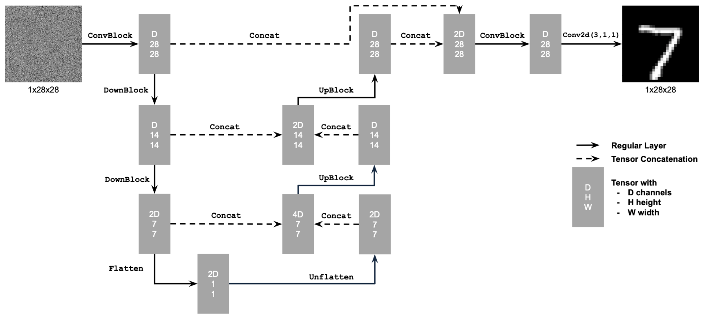
UNet Architecture
Visualization of the downsampling and upsampling blocks, as well as the skip connections (dashed lines).
Visualization of the downsampling and upsampling blocks, as well as the skip connections (dashed lines).
Standard Operations
The network is built on fundamental operations, including convolutions (with padding to preserve dimensions), Group Normalization, and activation functions (GELU). The more complex blocks are composed as follows:
The network is built on fundamental operations, including convolutions (with padding to preserve dimensions), Group Normalization, and activation functions (GELU). The more complex blocks are composed as follows:
- ConvBlock: Conv2d $\to$ GroupNorm $\to$ GELU.
- DownBlock: Downsampling (Conv2d stride=2) $\to$ ConvBlock.
- UpBlock: Upsampling (ConvTranspose2d) $\to$ Concatenation (with skip connection) $\to$ ConvBlock.
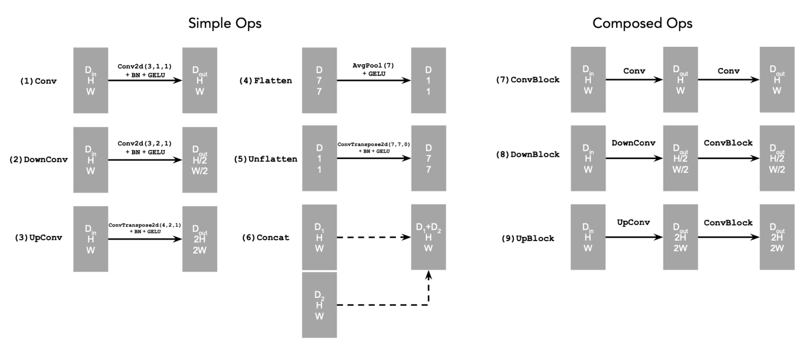
UNet Operations
Detailed view of the simple and composed operations.
Detailed view of the simple and composed operations.
1.2 Training a Single-Step Denoiser
Noising Process Visualization
First, I visualized how different noise levels affect the digits. We add noise according to $z = x + \sigma \epsilon$, where $\epsilon \sim \mathcal{N}(0, I)$.
As $\sigma$ increases from 0.0 to 1.0, the digits progressively become more corrupted and harder to recognize:
First, I visualized how different noise levels affect the digits. We add noise according to $z = x + \sigma \epsilon$, where $\epsilon \sim \mathcal{N}(0, I)$.
As $\sigma$ increases from 0.0 to 1.0, the digits progressively become more corrupted and harder to recognize:
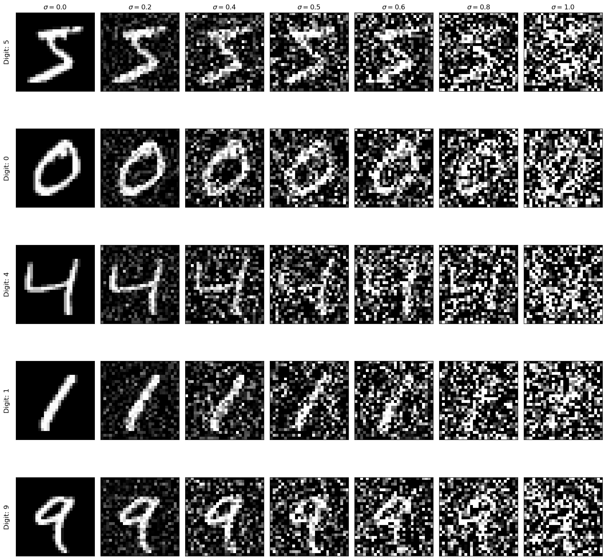
Varying Noise Levels ($\sigma$)
From clean ($\sigma=0.0$) to pure noise ($\sigma=1.0$).
From clean ($\sigma=0.0$) to pure noise ($\sigma=1.0$).
The goal is straightforward: given a noisy image $z$, train a UNet to predict the clean image $x$.
I utilized the UNet architecture defined in 1.1 and trained it on the MNIST dataset. The network optimizes the Mean Squared Error (MSE) between the denoised output and the original image.
Training Configuration:
Training Configuration:
- Dataset: MNIST (28x28 grayscale digits)
- Noise level: $\sigma = 0.5$
- Architecture: UNet with hidden dimension $D = 128$
- Optimizer: Adam (lr = 1e-4)
- Training: 5 epochs, batch size 256
Training Loss Curve
The model converged smoothly over 5 epochs. The loss curve shows steady improvement as the UNet learned to map noisy digits back to their clean counterparts.
The model converged smoothly over 5 epochs. The loss curve shows steady improvement as the UNet learned to map noisy digits back to their clean counterparts.
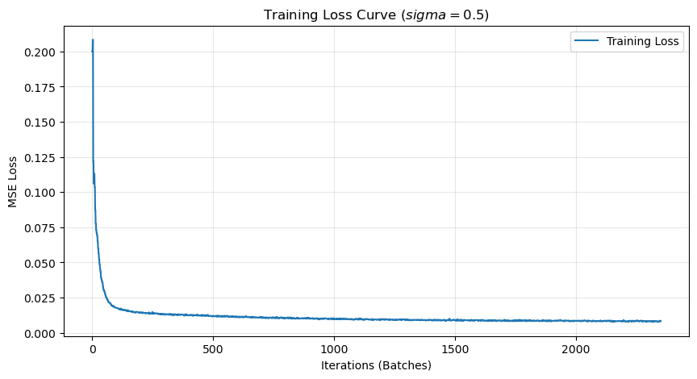
Training Loss ($\sigma = 0.5$)
Standard Mean Squared Error (MSE) loss over iterations.
Standard Mean Squared Error (MSE) loss over iterations.
Sample Results on Test Set
After training, the model successfully denoises test set digits. Below are the results after the 1st and 5th epoch. By the 5th epoch, the reconstruction quality has improved significantly.
After training, the model successfully denoises test set digits. Below are the results after the 1st and 5th epoch. By the 5th epoch, the reconstruction quality has improved significantly.
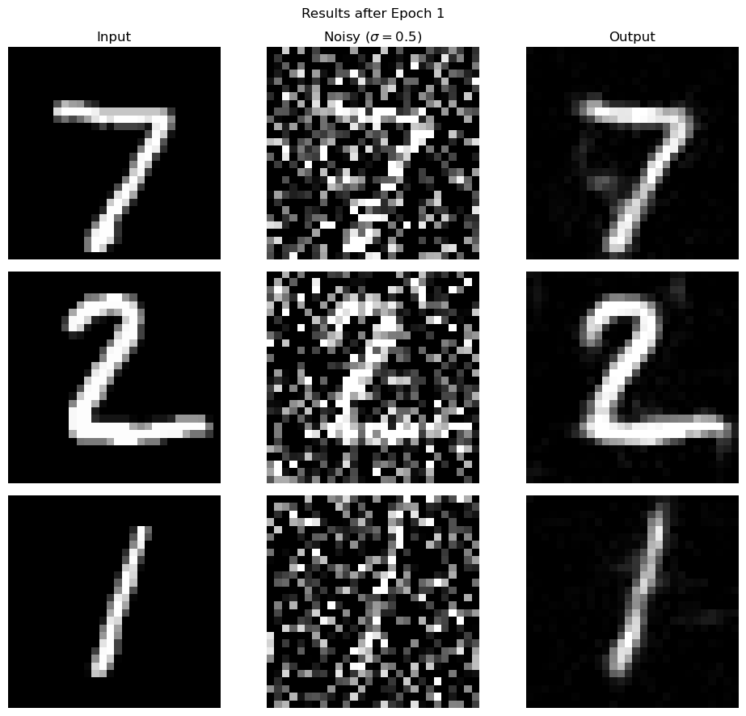
Results after Epoch 1
The model begins to recover shapes, but some noise and artifacts remain.
The model begins to recover shapes, but some noise and artifacts remain.
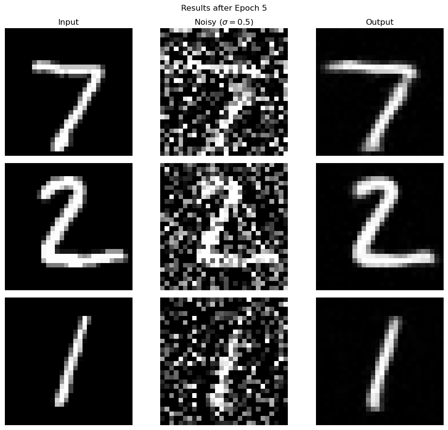
Results after Epoch 5
Clean and sharp digit reconstructions.
Clean and sharp digit reconstructions.
1.2.2 Out-of-Distribution Testing
Our denoiser was trained on MNIST digits noised with $\sigma = 0.5$. Let's see how the denoiser performs on different $\sigma$'s that it wasn't trained for. I visualized the denoiser results on test set digits with varying levels of noise $\sigma$.
Interestingly, the model performs reasonably well even on noise levels it never saw during training, though performance degrades at the extremes ($\sigma \to 1.0$). The visualization below demonstrates how the model generalizes across the range of noise levels.
Interestingly, the model performs reasonably well even on noise levels it never saw during training, though performance degrades at the extremes ($\sigma \to 1.0$). The visualization below demonstrates how the model generalizes across the range of noise levels.
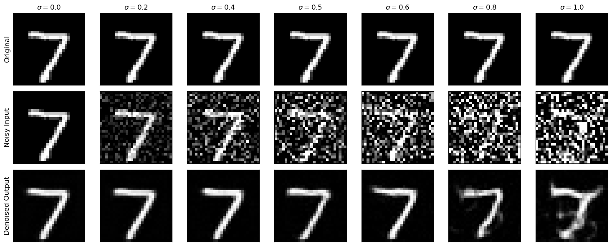
Generalization Capability
The model generalizes well to lower noise levels ($\sigma < 0.5$) but struggles to recover structure at very high noise ($\sigma \to 1.0$).
The model generalizes well to lower noise levels ($\sigma < 0.5$) but struggles to recover structure at very high noise ($\sigma \to 1.0$).
1.2.3 Generative Task: Denoising Pure Noise
From Denoising to Generation
The ultimate goal is to generate new content, not just fix broken images. To test this capability, I trained the model to denoise pure Gaussian noise ($z \sim \mathcal{N}(0, I)$) without any underlying clean image signal.
Effectively, the model is given a "blank canvas" of random static and asked to hallucinate a digit. I trained this configuration for 5 epochs using the same architecture as before.
The ultimate goal is to generate new content, not just fix broken images. To test this capability, I trained the model to denoise pure Gaussian noise ($z \sim \mathcal{N}(0, I)$) without any underlying clean image signal.
Effectively, the model is given a "blank canvas" of random static and asked to hallucinate a digit. I trained this configuration for 5 epochs using the same architecture as before.
Training Progress
The loss curve below illustrates the training trajectory. The model quickly learns to minimize the error, but as we will see, a low MSE loss doesn't necessarily result in a sharp image in this context.
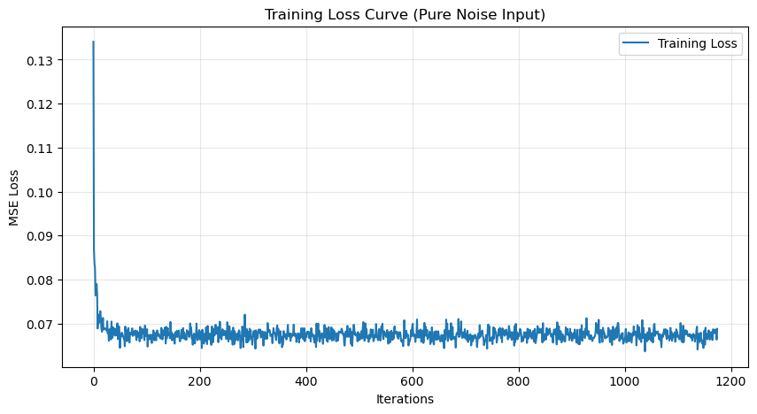
Training Loss (Pure Noise)
Convergence over 5 epochs.
Convergence over 5 epochs.
Qualitative Results (Epoch 1)
At the very beginning of training, the model struggles to find any structure in the noise, producing results that look like vague, gray blobs.
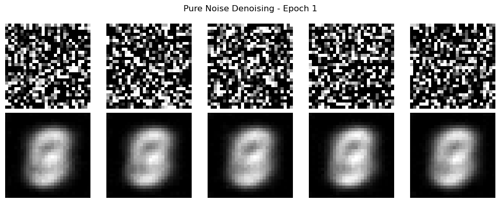
Epoch 1 Results
Top: Input Noise | Bottom: Model Output
Top: Input Noise | Bottom: Model Output
Qualitative Results (Epoch 5)
By the end of training, the shapes are more defined and centralized, but they still lack the distinct features of specific numbers.
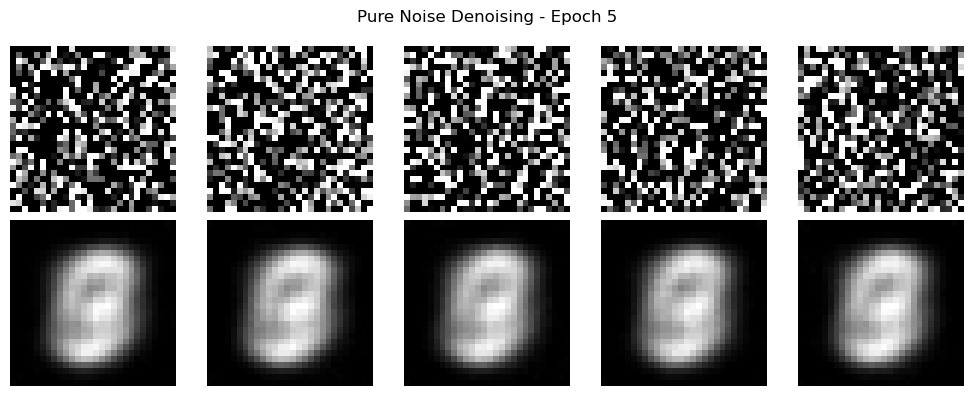
Epoch 5 Results
The outputs resemble a generic "average" digit rather than specific numbers.
The outputs resemble a generic "average" digit rather than specific numbers.
Analysis: Why are the results blurry?
The generated images look like a ghostly superposition of multiple numbers. This phenomenon is a direct consequence of the MSE (Mean Squared Error) loss function.
Mathematically, the optimal prediction that minimizes the squared error across a dataset is the mean (or centroid) of that dataset. Since the model receives pure random noise with no conditioning signal (it doesn't know which digit to generate), it hedges its bets.
Instead of guessing a "3" and risking a huge error if the target was actually a "7", the model converges to the average of all MNIST digits. This results in the blurry, ambiguous shapes seen above, which represent the statistical center of the data distribution.
The generated images look like a ghostly superposition of multiple numbers. This phenomenon is a direct consequence of the MSE (Mean Squared Error) loss function.
Mathematically, the optimal prediction that minimizes the squared error across a dataset is the mean (or centroid) of that dataset. Since the model receives pure random noise with no conditioning signal (it doesn't know which digit to generate), it hedges its bets.
Instead of guessing a "3" and risking a huge error if the target was actually a "7", the model converges to the average of all MNIST digits. This results in the blurry, ambiguous shapes seen above, which represent the statistical center of the data distribution.
Part 2: Training a Flow Matching Model
While single-step denoising works for removing moderate noise, generating high-fidelity images from pure noise requires an iterative approach.
I implemented a Flow Matching model (a modern take on Diffusion). Instead of predicting the clean image $x_0$ in one go, the model learns to predict the velocity field (or noise direction) that gradually transforms pure noise into a clean image over time $t \in [0, 1]$.
I implemented a Flow Matching model (a modern take on Diffusion). Instead of predicting the clean image $x_0$ in one go, the model learns to predict the velocity field (or noise direction) that gradually transforms pure noise into a clean image over time $t \in [0, 1]$.
2.1 Time Conditioning
Injecting Time into the UNet
In a diffusion process, the distribution of images changes at every timestep $t$. At $t=0$, we have clean images; at $t=1$, we have pure noise. The UNet needs to know which timestep it is currently processing to predict the correct update.
To achieve this, I modified the architecture to include FCBlocks (Fully Connected Blocks). These blocks take a sinusoidal time embedding, process it through an MLP, and inject the resulting signal into the UNet layers via addition.
In a diffusion process, the distribution of images changes at every timestep $t$. At $t=0$, we have clean images; at $t=1$, we have pure noise. The UNet needs to know which timestep it is currently processing to predict the correct update.
To achieve this, I modified the architecture to include FCBlocks (Fully Connected Blocks). These blocks take a sinusoidal time embedding, process it through an MLP, and inject the resulting signal into the UNet layers via addition.
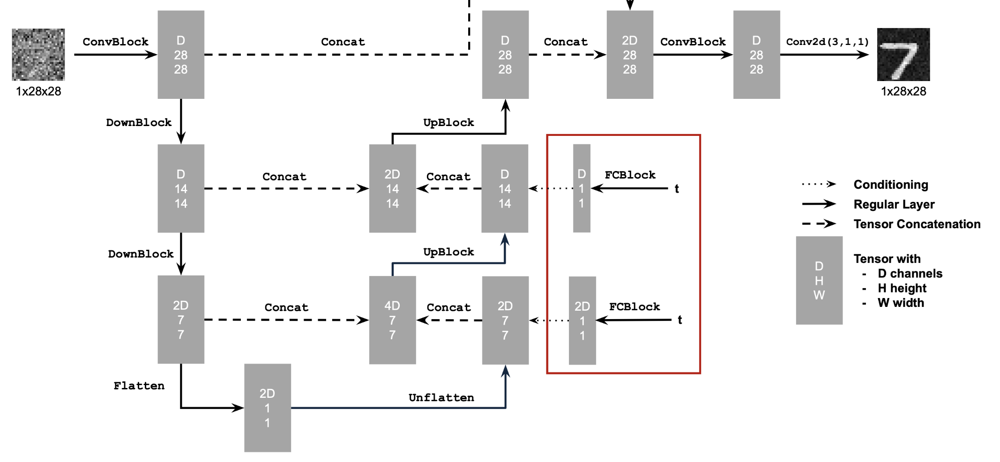
Time-Conditioned Architecture
The red box highlights the new FCBlocks that inject time information into the upsampling path.
The red box highlights the new FCBlocks that inject time information into the upsampling path.
The FCBlock
The FCBlock acts as the bridge between the scalar timestep $t$ and the spatial feature maps of the UNet. It projects the time embedding to the correct channel dimension using Linear layers and GELU activations.
The FCBlock acts as the bridge between the scalar timestep $t$ and the spatial feature maps of the UNet. It projects the time embedding to the correct channel dimension using Linear layers and GELU activations.
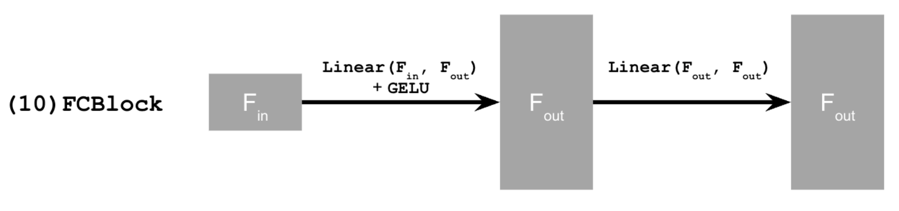
FCBlock Structure
Projects time embeddings to feature channels.
Projects time embeddings to feature channels.
2.2 Training the Flow Matching Model
Training Objective
We train the model to predict the vector field $u_t(x|x_1)$ that points from noise $x_0$ towards data $x_1$. During training, we sample a random clean image $x_1$, random noise $x_0$, and a random time $t \in [0, 1]$. We create a noisy intermediate image via linear interpolation: $$ x_t = (1 - t)x_0 + t x_1 $$ The model is then trained to predict the direction $(x_1 - x_0)$ using MSE loss.
We train the model to predict the vector field $u_t(x|x_1)$ that points from noise $x_0$ towards data $x_1$. During training, we sample a random clean image $x_1$, random noise $x_0$, and a random time $t \in [0, 1]$. We create a noisy intermediate image via linear interpolation: $$ x_t = (1 - t)x_0 + t x_1 $$ The model is then trained to predict the direction $(x_1 - x_0)$ using MSE loss.
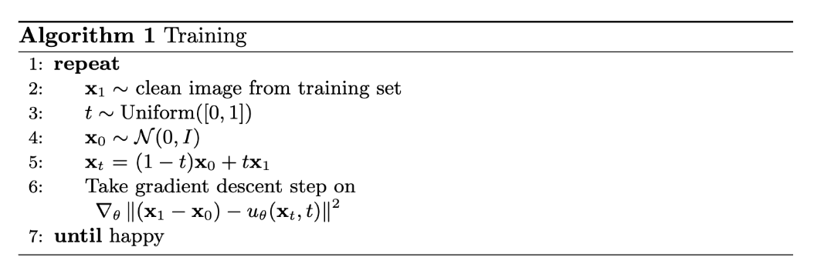
Algorithm 1: Training
Optimizing the vector field prediction.
Optimizing the vector field prediction.
Training Progress
I trained the time-conditioned UNet for 20 epochs on MNIST. The loss curve shows a smooth convergence, indicating the model successfully learned to predict the flow direction across different timesteps.
I trained the time-conditioned UNet for 20 epochs on MNIST. The loss curve shows a smooth convergence, indicating the model successfully learned to predict the flow direction across different timesteps.
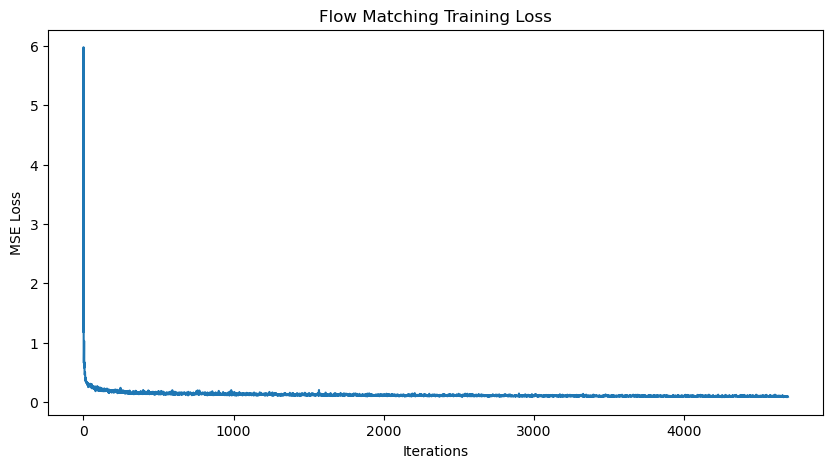
Training Loss
Mean Squared Error over 20 epochs.
Mean Squared Error over 20 epochs.
2.3 Sampling from the Model
Generating Digits
To generate new images, we invert the process. We start with pure noise $x_0 \sim \mathcal{N}(0, I)$ and numerically integrate the ordinary differential equation (ODE) defined by our neural network from $t=0$ to $t=1$.
Using the Euler method with $T$ steps, we iteratively update the image: $$ x_{t + \Delta t} = x_t + \Delta t \cdot \text{Model}(x_t, t) $$
To generate new images, we invert the process. We start with pure noise $x_0 \sim \mathcal{N}(0, I)$ and numerically integrate the ordinary differential equation (ODE) defined by our neural network from $t=0$ to $t=1$.
Using the Euler method with $T$ steps, we iteratively update the image: $$ x_{t + \Delta t} = x_t + \Delta t \cdot \text{Model}(x_t, t) $$
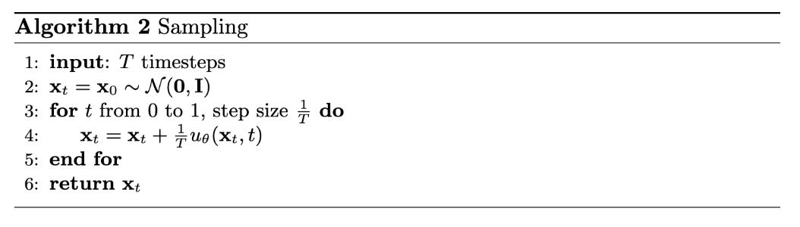
Algorithm 2: Sampling
Iterative generation via Euler integration.
Iterative generation via Euler integration.
Evolution of Generation Quality
I visualized the sampling results at different stages of training.
I visualized the sampling results at different stages of training.
- Epoch 1: The model generates vague, blurry shapes. It has learned the mean structure but not the distinct modes of digits.
- Epoch 5: Distinct digit shapes begin to form, though some artifacts remain.
- Epoch 10: The model generates crisp, recognizable digits that look indistinguishable from the dataset.
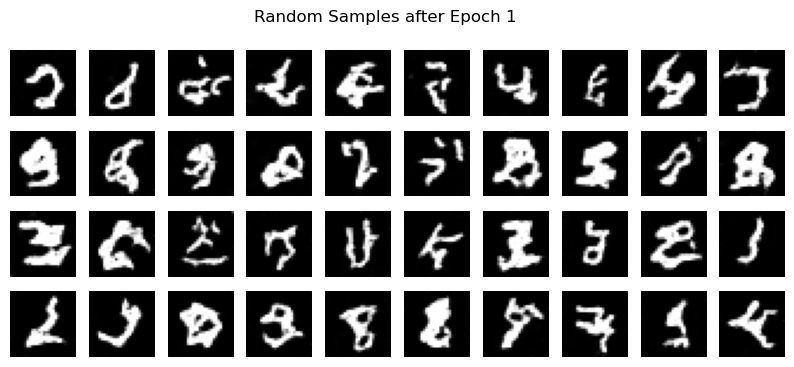
Epoch 1
Blurry, "blob-like" structures.
Blurry, "blob-like" structures.
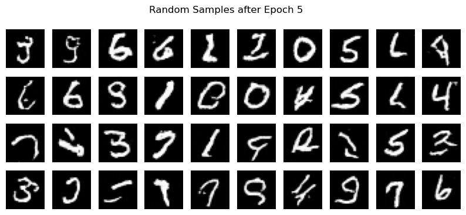
Epoch 5
Shapes are forming, resembling specific digits.
Shapes are forming, resembling specific digits.
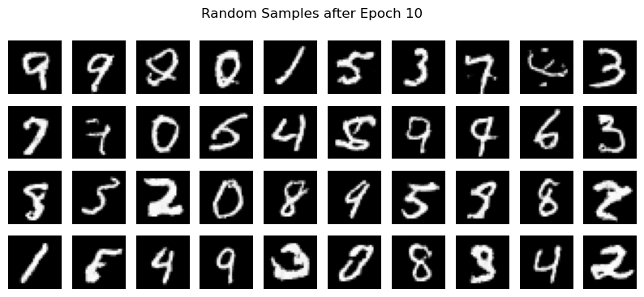
Epoch 10
Clean, high-quality generated digits.
Clean, high-quality generated digits.
2.4 Adding Class-Conditioning to UNet
Controlling the Output
To transform the model from a random digit generator into a controllable tool, I injected class information. The goal is to prompt the UNet with a specific label (e.g., "5") and have it generate that digit.
Architecture Modifications:
To transform the model from a random digit generator into a controllable tool, I injected class information. The goal is to prompt the UNet with a specific label (e.g., "5") and have it generate that digit.
Architecture Modifications:
- Conditioning Vector $c$: I utilized one-hot encoding for the digits 0-9.
- FCBlocks: Two additional Fully-Connected Blocks were added to the UNet to process this class vector, similar to how the time embedding is handled.
- Dropout ($p_{uncond} = 0.1$): To enable Classifier-Free Guidance (CFG) later, the model needs to know how to generate images unconditionally. During training, I dropped the class label 10% of the time (setting it to a zero vector).
2.5 Training the Class-Conditioned UNet
Training Algorithm
The training process includes the class label handling and the dropout mechanism. The model learns to predict the noise vector field conditioned on both $t$ and $c$.
The training process includes the class label handling and the dropout mechanism. The model learns to predict the noise vector field conditioned on both $t$ and $c$.
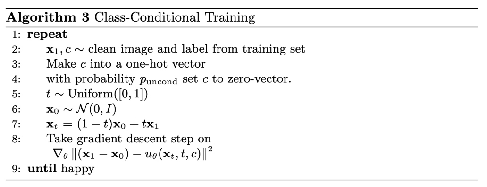
Algorithm 3
Training loop with label dropout.
Training loop with label dropout.
Loss Curve
I trained the model for 20 epochs using the standard schedule. The loss curve shows stable convergence.
I trained the model for 20 epochs using the standard schedule. The loss curve shows stable convergence.
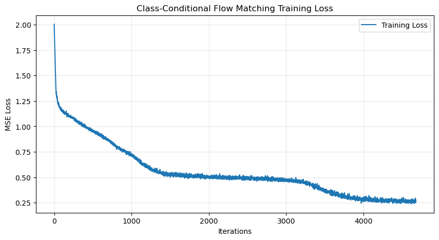
Training Loss
Mean Squared Error over 20 epochs.
Mean Squared Error over 20 epochs.
2.6 Sampling and Training without Scheduler
Classifier-Free Guidance (CFG)
At inference time, we can dramatically improve sample quality using CFG. By computing both a conditional noise estimate ($\epsilon_{cond}$) and an unconditional one ($\epsilon_{uncond}$), we can extrapolate towards the conditional direction: $$ \epsilon_{final} = \epsilon_{uncond} + \gamma (\epsilon_{cond} - \epsilon_{uncond}) $$ I used a guidance scale of $\gamma = 5.0$.
At inference time, we can dramatically improve sample quality using CFG. By computing both a conditional noise estimate ($\epsilon_{cond}$) and an unconditional one ($\epsilon_{uncond}$), we can extrapolate towards the conditional direction: $$ \epsilon_{final} = \epsilon_{uncond} + \gamma (\epsilon_{cond} - \epsilon_{uncond}) $$ I used a guidance scale of $\gamma = 5.0$.
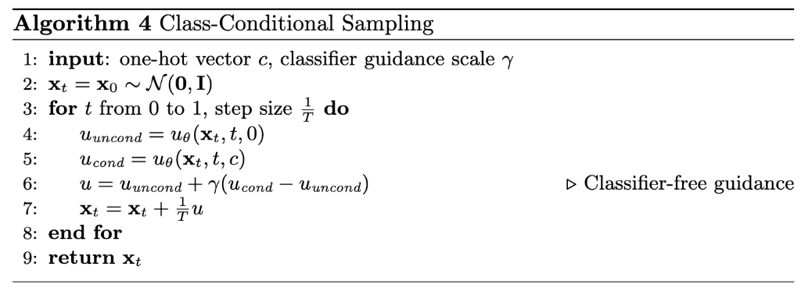
Algorithm 4
Sampling with guidance.
Sampling with guidance.
Experiment: Removing the Learning Rate Scheduler
Simplifying the Training Pipeline
Standard diffusion training often relies on learning rate schedules (warmup and decay) to ensure stability. The assignment asked to remove this scheduler to see if we can achieve similar results with a simpler setup.
How to maintain performance?
Simply removing the decay can lead to instability if the learning rate is too high. To compensate, I used the following configuration:
Standard diffusion training often relies on learning rate schedules (warmup and decay) to ensure stability. The assignment asked to remove this scheduler to see if we can achieve similar results with a simpler setup.
How to maintain performance?
Simply removing the decay can lead to instability if the learning rate is too high. To compensate, I used the following configuration:
- Optimizer: Adam (which naturally handles adaptive learning rates per parameter).
- Constant Learning Rate: I set a conservative, constant rate of
lr = 1e-4.
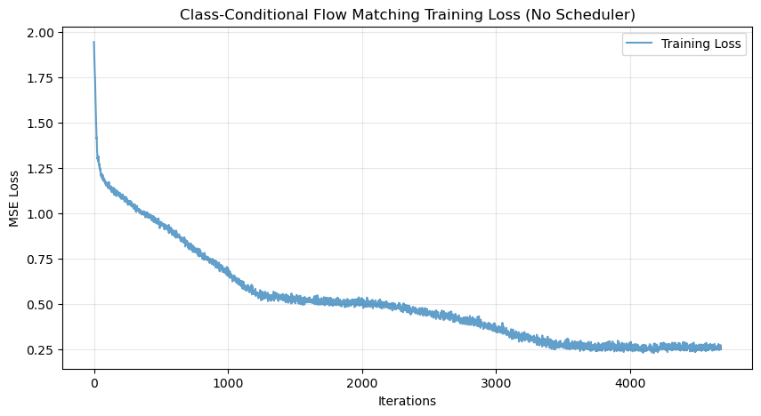
Training Loss (No Scheduler)
With a constant LR of 1e-4, the model converges reliably over 10 epochs.
With a constant LR of 1e-4, the model converges reliably over 10 epochs.
Sampling Results
Below are the results from this simplified training run after 1, 5, and 10 epochs. Even without the scheduler, the model successfully learns to generate high-fidelity digits using CFG.
Below are the results from this simplified training run after 1, 5, and 10 epochs. Even without the scheduler, the model successfully learns to generate high-fidelity digits using CFG.
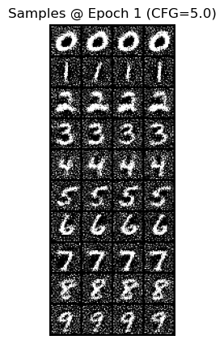
Epoch 1
Early noisy structures.
Early noisy structures.
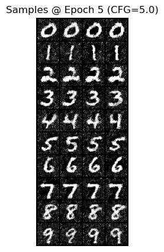
Epoch 5
Digits are clearly recognizable.
Digits are clearly recognizable.
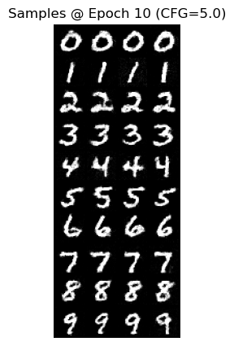
Epoch 10
Final results showing correct class conditioning.
Final results showing correct class conditioning.
Summary & Key Takeaways
1. The Power of Iterative Refinement
Part B demonstrated the fundamental difference between single-step and iterative models. While the single-step denoiser (Part 1.2) produced blurry "average" digits from pure noise, the iterative DDPM (Part 2) successfully sculpted crisp, diverse digits by breaking the problem down into manageable steps.
2. Conditioning is Key
Adding time and class conditioning transformed the UNet from a simple denoiser into a controllable generative model.
3. From Scratch to State-of-the-Art
Building these models from scratch demystified the magic seen in DeepFloyd (Part A). The "flow matching" objective is mathematically elegant yet surprisingly simple to implement. Furthermore, the experiments in Part 2.6 showed that with a robust optimizer like Adam and a carefully chosen learning rate, complex schedules are not always strictly necessary for convergence.
Part B demonstrated the fundamental difference between single-step and iterative models. While the single-step denoiser (Part 1.2) produced blurry "average" digits from pure noise, the iterative DDPM (Part 2) successfully sculpted crisp, diverse digits by breaking the problem down into manageable steps.
2. Conditioning is Key
Adding time and class conditioning transformed the UNet from a simple denoiser into a controllable generative model.
- Time Conditioning: Allowed the model to specialize in removing different "frequencies" of noise at different stages.
- Class Conditioning: Gave us semantic control. Combined with Classifier-Free Guidance, this proved to be the most powerful technique for improving image quality and adherence to the prompt.
3. From Scratch to State-of-the-Art
Building these models from scratch demystified the magic seen in DeepFloyd (Part A). The "flow matching" objective is mathematically elegant yet surprisingly simple to implement. Furthermore, the experiments in Part 2.6 showed that with a robust optimizer like Adam and a carefully chosen learning rate, complex schedules are not always strictly necessary for convergence.